思维导图也叫心智图，是一项流行的全脑式学习方法，用来表示词，思路，任务或其他与围绕着一个中央关键词或想法项目的示意图。通过径向，图形和非线性的方式提出意见，思维导图鼓励头脑风暴的方法来规划和组织任务。虽然思维导图的分支表示分层树形结构，其放射状排列扰乱通常与呈现更加线性的视觉线索层次相关概念的优先次序。
在这里，我们选择了一些好的思维导图工具，让您能够快速探索思路，与同事协作和编辑你的内容。下面的大多数工具是免费的，享受！
1. XMind
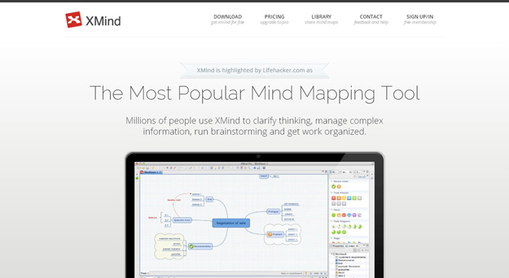
XMind 是一个开源项目，这意味着它可以免费下载并自由地使用。 XMind 也有 Plus/Pro 版本，提供更专业的功能。除了地图结构， XMind 同时也提供树，逻辑和鱼骨图，具有内置拼写检查，搜索，加密，甚至是音频笔记功能。
2. Coggle
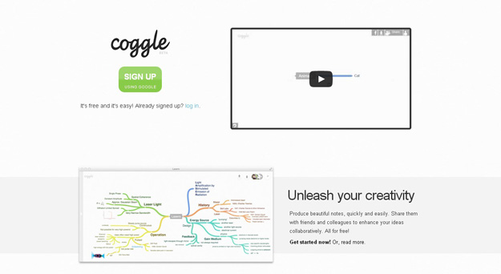
Coggle 是一个免费的在线协作思维导图工具，让您直观地用一个精美的呈现分支结构定义的连接。它可以让你制作出漂亮的笔记，方便快捷。与朋友和同事分享，和他们协同工作，展现你的想法。
3. Mindmaps
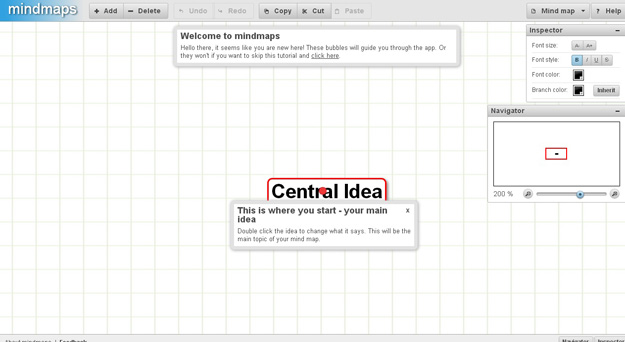
这是一个开源的应用程序，使任何人都可以轻松地创建好看的思维导图。它可以创建分支（子想法）与无限层级，其中所有这些都互相连接。它是完全基于 HTML5，CSS3 和JavaScript 实现的。
4. FreeMind
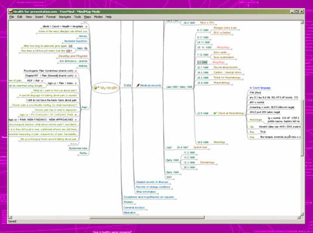
FreeMind 是用 Java 编写的免费心智图软件。最近的发展希望把它变成高生产力的工具。操作 FreeMind 的导航比 MindManager 快，因为它有一键式"折叠/展开"和"跟随链接"操作。
5. MindMeister
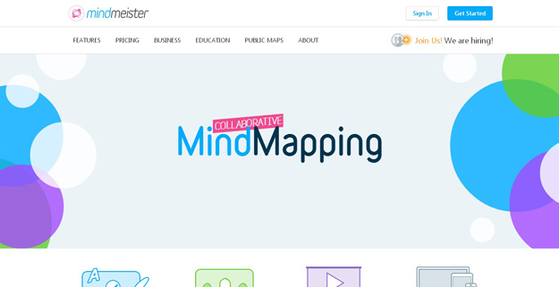
MindMeister 被认为是应用广泛的在线思维导图应用目前在市场上。凭借其屡获殊荣的网上版本和 iPhone，iPad 和 Android 的自由移动应用程序，用户可以思维导图在学校，在家里，在办公室，甚至在旅途中。
6. Mindnode
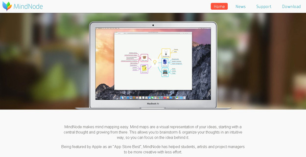
MindNode是一个漂亮的 Mac 专用的应用程序，既优雅又简单易用。借助 Mindnode，您可以轻松记下你的想法和你喜欢 MindNodes 无限的画布添加尽可能多的思维导图。你甚至可以跨不同的地图连接节点。随着iCloud的（或Dropbox的）所有的思维导图是在所有设备上。或者只是 你的思维导图导出到一个开放格式，文本文件，甚至是图像。
7. Bubbl.us
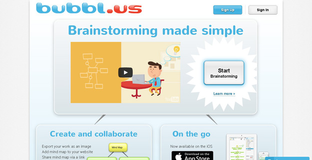
Bubbl.us是一个基于 Flash 的web应用程序，让您可以快速绘制出的看法，线性分支时尚，节省了他们在网上和出口到几个不同的格式。
8. Text to Mind
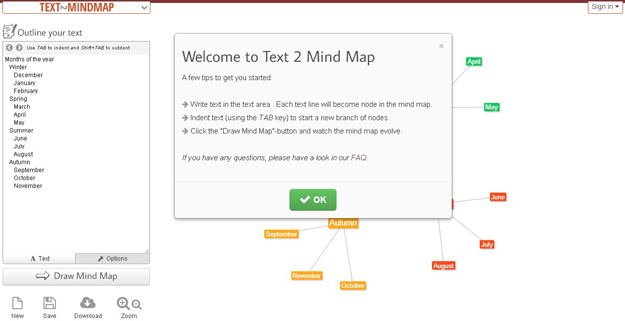
Text2MindMaps 是一款使用简单的在线工具，是组织你的思想的有效途径。它易于使用，只需键入一些文本到文本区域，使用Tab键缩进文本行，然后单击绘图思维导图按钮，看到它演变。
9. Popplet
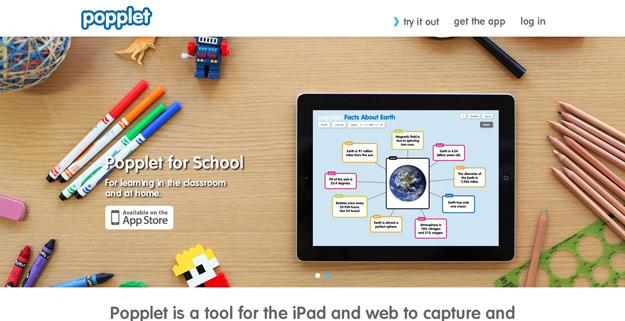
Popplet 是另外一款思维导图工具，它是完美的视觉策划你的想法和奇思妙想。您可以直观地记录你的想法，灵感和思想，以及上传文字，视频，图片和借鉴的画布上。
10. WiseMapping
WiseMapping 是一个开源的 HTML5 心智图应用，既可以在线使用，也可以下载到自己的服务器上运行。
11. Mindmap
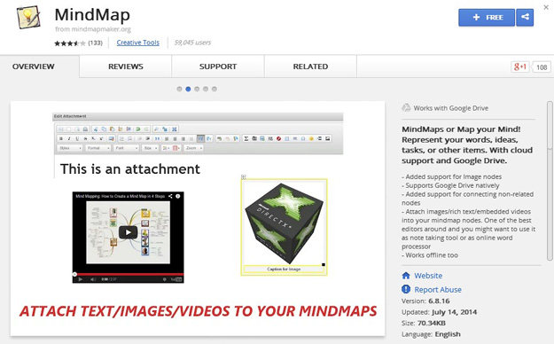
MindMap 是谷歌 Chrome 浏览器的扩展，谷Google Drive, Dropbox 和内置箱支持。您可以将您的工作保存到本地存储，在云中，并打印或导出完成思维导图的图像。
12. Stormboard
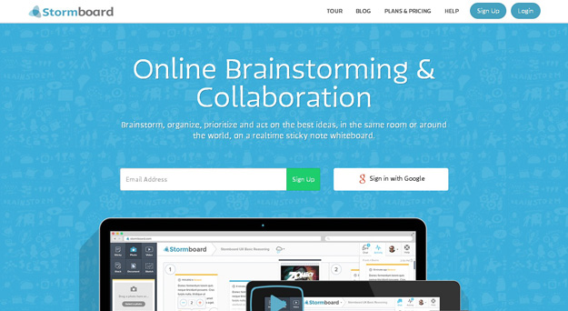
Stormboard是一个基于 Web 的应用，可以跨设备使用。有一个沉重的重点放在协作这里了，另外还有一些不寻常的输出/映射选项，如便利贴看法。 5个用户是免费的，而如果你想与你需要掏出的500万美元和每月10美元，这取决于你有多少功能，例如更大的团队中工作。
13. Wridea
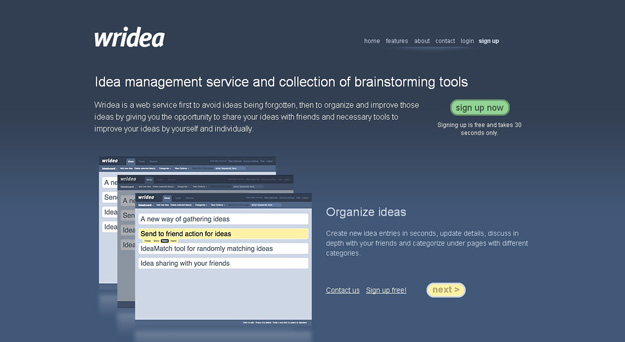
Wridea 是一个 Web 服务，首先要避免的想法被遗忘，然后组织和给你的机会来分享您的想法与朋友和必要的工具，自己并分别以改善你的想法改善这些想法。
14. Mindomo
Mindomo 提供了思维导图和项目协作工具，企业和教育机构。它可以用来在一个安全的环境头脑风暴心智图，创建任务和资源共享。这是完全的协作，每个工作区中启用了对话，讨论和主题。
15. MindManager
压轴的 MindManager 是倍受赞誉、好用的思维导图软件。这款强大的思维导图工具可以让你在一个单一的视图组织你的想法，在这里你可以轻松地拖放操作和优先考虑你的想法。添加图像，视频，超链接和附件都非常简单，让你简单的把想法付诸行动了。
来源：http://www.linuxidc.com/Linux/2015-01/111807.htm